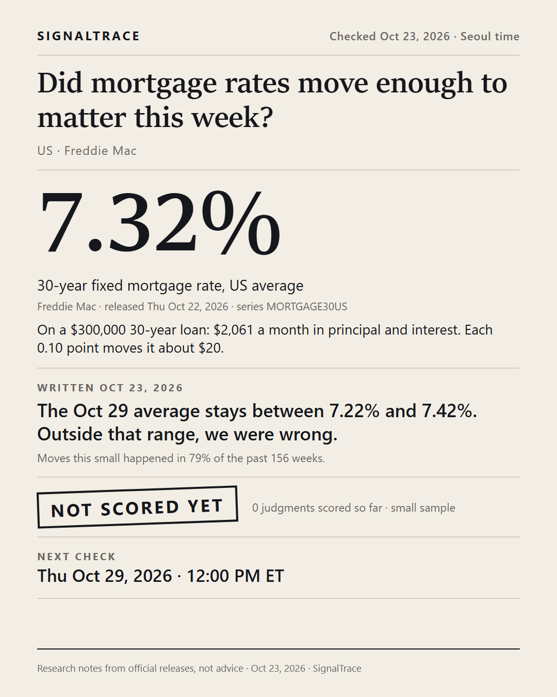
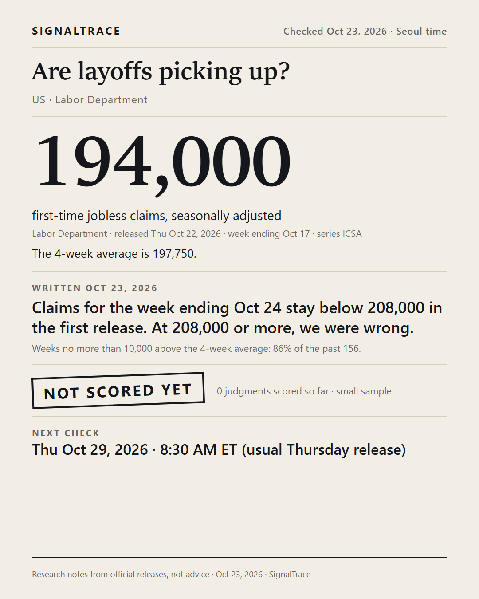
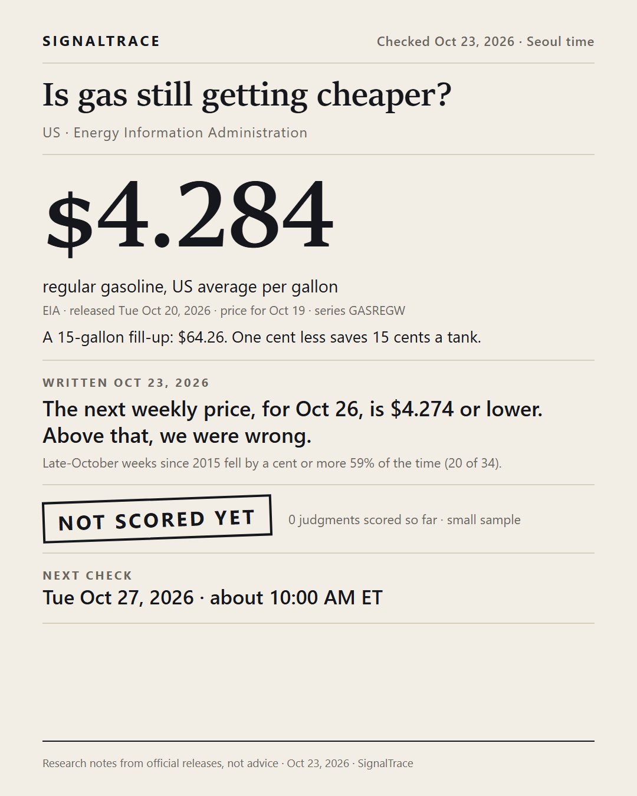

SIGNALTRACE · PRE-WRITTEN JUDGMENTS
Three judgments written before the data
Each judgment was written on Oct 23, 2026, before the official release it depends on. We score it from that release, add the result here, and do not edit the judgment. Research notes from official releases, not advice.
Posted Oct 24, 2026, Seoul time. Saved copies: Internet Archive. 0 judgments scored so far · small sample.
Did mortgage rates move enough to matter this week?

- Latest number
- 7.32%, 30-year fixed mortgage rate, US average
- Source
- Freddie Mac · released Thu Oct 22, 2026 · series MORTGAGE30US
- Written Oct 23, 2026
- The Oct 29 average stays between 7.22% and 7.42%. Outside that range, we were wrong.
- Base rate
- Moves this small happened in 79% of the past 156 weeks.
- Result
- Not scored yet
- Next check
- Thu Oct 29, 2026 · 12:00 PM ET
Are layoffs picking up?

- Latest number
- 194,000, first-time jobless claims, seasonally adjusted
- Source
- Labor Department · released Thu Oct 22, 2026 · week ending Oct 17 · series ICSA
- Written Oct 23, 2026
- Claims for the week ending Oct 24 stay below 208,000 in the first release. At 208,000 or more, we were wrong.
- Base rate
- Weeks no more than 10,000 above the 4-week average: 86% of the past 156.
- Result
- Not scored yet
- Next check
- Thu Oct 29, 2026 · 8:30 AM ET (usual Thursday release)
Is gas still getting cheaper?

- Latest number
- $4.284, regular gasoline, US average per gallon
- Source
- EIA · released Tue Oct 20, 2026 · price for Oct 19 · series GASREGW
- Written Oct 23, 2026
- The next weekly price, for Oct 26, is $4.274 or lower. Above that, we were wrong.
- Base rate
- Late-October weeks since 2015 fell by a cent or more 59% of the time (20 of 34).
- Result
- Not scored yet
- Next check
- Tue Oct 27, 2026 · about 10:00 AM ET